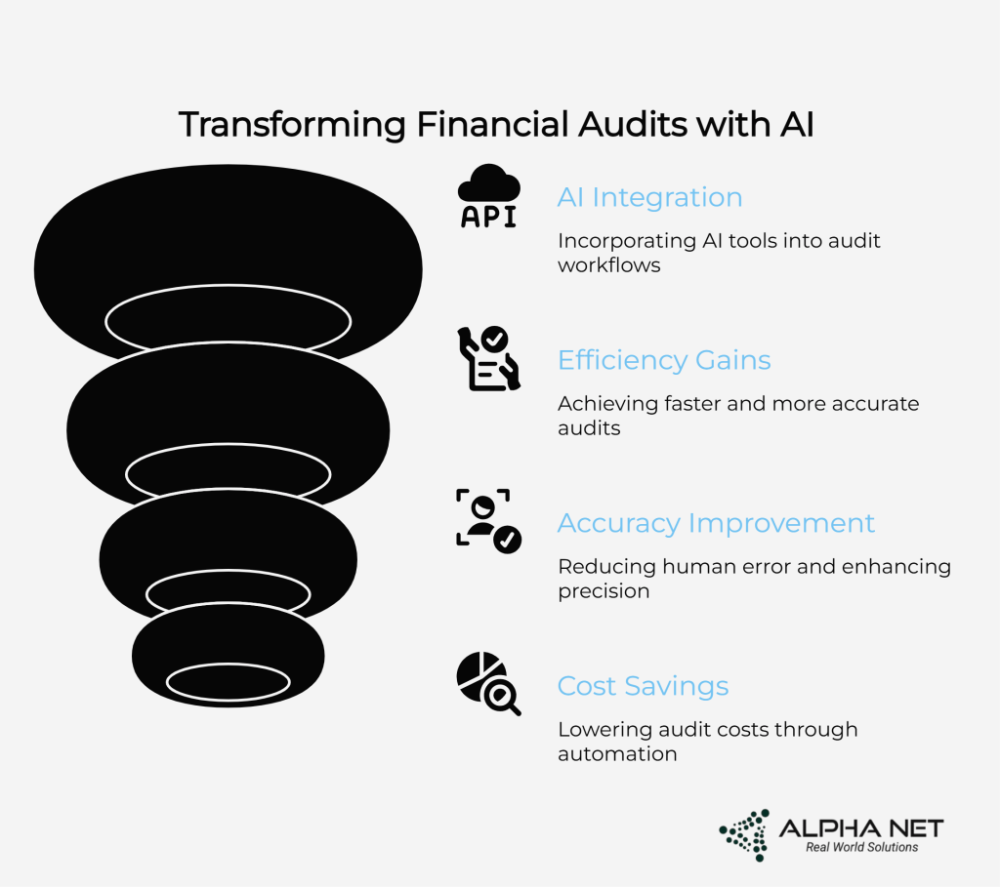

Insights & Resources
Discover a wealth of insightful materials meticulously crafted to provide you with a comprehensive understanding of the latest trends.
Blogs

AI-Powered Forward Engineering: A Faster, Smarter Way to Build Software
Understanding Software Forward Engineering: Beyond Traditional Development Core AI-Powered Forward Engineering Capabilities That Transform Software Development Intelligent Architecture Generation Automated Code Generation and Optimization Predictive Testing and Quality Assurance Intelligent Documentation and Maintenance Industry Transformation Scenarios: Potential Results Across Software Sectors Financial Technology Transformation Potential E-commerce Platform Possibilities Healthcare Software Innovation Scenarios Overcoming Implementation Challenges: Strategic Solutions The Skills Transformation Challenge Integration with Legacy Systems Data Quality and Security Considerations Alpha Net: Pioneering AI-Powered Software Forward Engineering Comprehensive AI-Integrated Development Methodology Advanced AI Capabilities for Software Excellence Measurable Impact Across Software Projects Strategic Implementation: Your Roadmap to AI-Powered Forward Engineering Start with High-Impact, Low-Risk Projects Build AI-Human Collaboration Models Invest in Comprehensive Team Development The Future of Software Forward Engineering Conclusion: Leading the Software Revolution FAQs What is AI-powered forward engineering in software development? How does AI-powered forward engineering reduce development time? Can this approach help modernize legacy systems? What are the business benefits of using AI in software engineering? Which industries benefit most from AI-powered forward engineering? How is this different from traditional software development? How do we start using AI-powered forward engineering?

GCC Support Modernization
Executive Summary Introduction: GCCs at a Crossroads Traditional GCC Support: The Fractured Reality Disjointed Operations Create Systemic Inefficiencies Overstaffing Without Strategic Value Slow Escalation Chains Delay Resolution Alpha Net Consulting’s Comprehensive Technical Infrastructure Approach The Missing Technical Layer Event-Driven Architecture for Global Operations Integration Layer Excellence The Shift: From Reactive Support to Federated Intelligence Implementing Federated Models for Global Efficiency Agentic AI Layer: Intelligent Automation at Scale Platformized Operations: Support as a Product Technical Architecture Deep Dive Security Architecture for Global Operations Compliance Automation Framework Monitoring and Observability Evolution Alpha Net Consulting’s Comprehensive Solution Matrix Implementation Success Stories APAC FinTech: Dramatic Volume Reduction US Pharma GCC in Pune: Unified Operations Global SaaS Product GCC: Knowledge Transformation Getting Started: Alpha Net Consulting’s GCC Support Modernization Playbook Phase 1: Baseline Assessment (2-4 weeks) Phase 2: Quick Wins Implementation (4-8 weeks) Phase 3: AI Embedding (8-12 weeks) Phase 4: Federated Scaling (12-16 weeks) Phase 5: Continuous Optimization (Ongoing) Industry Trends and Future-Proofing Exponential Growth Projections Emerging Technology Integration Sustainability and Compliance Evolution Conclusion: Scale Intelligence, Not Legacy FAQ’s (Frequently Asked Questions) What are the main challenges with traditional GCC support structures? How does Alpha Net Consulting's federated GCC support model improve operational efficiency? What role does AI play in Alpha Net Consulting's GCC support transformation? How can organizations measure success in Alpha Net Consulting's GCC support modernization? . What are the key components of Alpha Net Consulting's AI-first GCC operating model? How long does it typically take to implement Alpha Net Consulting's GCC support modernization? What are the cost benefits of Alpha Net Consulting's GCC support infrastructure modernization? How does Alpha Net Consulting's approach differ from traditional IT service providers? What industries benefit most from Alpha Net Consulting's advanced GCC support modernization? How does Alpha Net Consulting ensure successful change management during GCC support transformation?

Agentic AI in Support
The Support Bottleneck: Why Traditional Models Are Breaking Down Enter Agentic AI: The Game-Changer Enterprise Support Has Been Waiting For The Nine Pillars: Specialized AI Agents That Revolutionize Support Operations 1. Ticket Triage Agent: The Never-Sleeping Service Desk Manager 2. Requirements Agent: Bridging the Communication Gap 3. Solution Architect Agent: Designing for Sustainable Resolution 4. Code Automation Agent: Production-Quality Implementation 5. Test Case Agent: Comprehensive Validation Scenarios 6. Validation Agent: Automated Compliance Excellence 7. Knowledge Agent: Capturing Institutional Intelligence 8. Security Agent: Your Digital Fortress Guardian 9. Supervisor Agent: The Orchestration Mastermind Built-In Guardrails: Preventing AI Hallucinations and Ensuring Reliability Multi-Layer Validation Framework Grounded Response Generation Boundary Detection and Escalation Continuous Monitoring and Feedback Loops Measurable Impact: The Numbers That Matter to Leadership Purpose-Built for Enterprise Requirements: Not Your Typical Business AI Seamless Integration Across Enterprise Technology Stacks Compliance-Ready by Design Flexible Deployment Options Under the Hood: Technical Architecture That Inspires Confidence The Future Landscape: From Reactive Support to Cognitive Service Management Emerging Agent Capabilities Advanced Learning Capabilities Strategic Value: What This Means for Leadership Reducing Tribal Knowledge Dependencies Converting Data into Intelligence Team Empowerment and Cultural Benefits Enhanced Compliance Capabilities Why Alpha Net Consulting: Your Strategic Partner in AI Transformation The Choice: Evolution or Revolution Call-to-Action Transform Your Support Operations with Agentic AI Frequently Asked Questions: Agentic AI in Support How does agentic AI differ from traditional RPA in enterprise IT support environments? What is the typical ROI timeline for implementing AI-powered ITSM in large organizations? Can agentic AI handle enterprise compliance requirements like SOX and GDPR automatically? How does intelligent ticket routing work in complex enterprise environments with multiple approval workflows? What are the cybersecurity implications of using machine learning for enterprise support operations? How do AI agents ensure data integrity in mission-critical systems during automated changes? Can agentic AI integrate with legacy enterprise systems like mainframes and ERP platforms? What happens when AI agents encounter scenarios outside their training parameters in critical business systems? How do enterprises measure the business impact of autonomous support beyond cost savings? What are the change management best practices for transitioning support teams to work alongside agentic AI?

Reimagining the SDLC in the Age of Agentic AI
From Waterfall to Autonomous — How Agentic AI, Backed by Alpha Net, Is Disrupting Software Delivery TL;DR (Executive Summary) I. Introduction: The SDLC Is Showing Its Age II. Agentic AI Defined (Quick Recap) III. Traditional SDLC vs Agentic SDLC: A Phase-by-Phase Comparison 1. Requirement Gathering 2. Design 3. Development 4. Testing 5. Deployment 6. Maintenance IV. Enter “Vibe Coding”: The Intuitive Bridge Between Human Intent and AI Execution What Is Vibe Coding? The Psychology Behind Vibe Coding How Vibe Coding Transforms Each SDLC Phase The Technical Magic Behind Vibe Coding Vibe Coding Success Stories The Challenges and Limitations of Vibe Coding The Future of Vibe Coding in Agentic SDLC Integrating Vibe Coding Into Your Agentic SDLC V. SDLC Is No Longer Linear — It’s Now a Feedback Loop VI. Risks & Cautions VII. Alpha Net’s Approach: Institutionalizing Agentic SDLC VIII. Start Small: Use Cases to Pilot Agentic SDLC IX. Implementation Roadmap and Industry Considerations Industry-Specific Adaptations Measuring Success: Key Performance Indicators Change Management and Team Adoption X. Agentic AI DevOps: Where Operations Meet Intelligence The Evolution from DevOps to Agentic DevOps The Agentic DevOps Stack: Intelligence at Every Layer Real-World Agentic DevOps in Action The Technical Architecture of Agentic DevOps Measuring Success in Agentic DevOps The Human Factor in Agentic DevOps Challenges and Pitfalls in Agentic DevOps The Future of Agentic DevOps Getting Started with Agentic DevOps XI. The Future: Self-Evolving Systems XII. Final Word: It’s Not Just Faster—It’s Smarter FAQ about Agentic SDLC What is the difference between traditional AI tools and Agentic AI in software development? How do AI agents collaborate across different SDLC phases? What skills will developers need in an Agentic SDLC environment? How does Agentic SDLC handle security concerns? Can Agentic SDLC work with legacy systems? What metrics should organizations track when implementing Agentic SDLC? What is vibe coding and how does it work? What types of projects benefit most from Agentic SDLC? How does Agentic SDLC impact software costs? How does Agentic DevOps differ from traditional DevOps automation? What skills do DevOps engineers need for Agentic DevOps? How do you ensure security in Agentic DevOps environments? Can Agentic DevOps work with existing infrastructure?

From ERP to AI: Reimagining Oracle Landscapes with Alpha Net’s Enterprise-Grade Intelligence
The Oracle Empire: Built on Intelligence, Maintained by Inefficiency Beyond Traditional Consulting: The Alpha Net Difference The Smart Money: Starting with Support Intelligence The Alpha Net AI Implementation Framework: From Chaos to Order Agentic AI Factory Inputs: Oracle Asset Integration Agentic AI Factory Outputs: Five-Agent Orchestration Keeping It Real: Measurable Transformation The Value Proposition: Beyond Cost Savings The Road Ahead: Your Oracle Future Starts Today Frequently Asked Questions: Oracle AI Support Implementation How long does Oracle Cloud Infrastructure AI implementation typically take for support operations? What's the difference between Oracle Autonomous Database and AI-powered Oracle support management? How does AI automation handle Oracle ERP integration challenges during support incidents? Can Oracle HCM support processes be automated without compromising employee data security? What Oracle Cloud applications benefit most from AI-powered support automation? How does Oracle support automation handle complex financial period-end closing processes? What's the ROI timeline for Oracle AI support implementation in enterprise environments? How does AI-powered Oracle support handle emergency incidents outside business hours? Can Oracle EPM performance management be optimized through AI without affecting existing business intelligence reports? What Oracle licensing considerations exist when implementing AI automation for support operations?

The CIO Transformation Playbook: 12‑Week Roadmap from Firefighter to Strategic Catalyst
1. The Silent Crisis: Priorities, People, & Technical Debt The Demand–Delivery Gap: When Success Becomes Your Biggest Problem Technical Debt: The Interest That Never Stops Compounding The People Puzzle: Skills, Retention, and the Great Resignation Aftermath 2. The CIO’s Inflection Point: From Firefighter to Strategic Catalyst The Great Pivot: Redefining the CIO Role The AI Reality Check: Beyond the Pilot Purgatory The Board-Level Reality: Where ROI Meets the Road 3. Alpha Net’s Dual‑Front Strategy: Teams + Tech Understanding the Alpha Net Advantage A. Teams & Talent Augmentation: The Right People at the Right Time B. Technology Excellence & Solutions: Beyond Slideware 4. Supporting the Full Delivery Lifecycle: From Concept to Cash Flow Strategy & Prioritization: Making Sense of the Chaos Implementation: Where the Magic Actually Happens Integration & Testing: The Moment of Truth Release & Deployment: The Final Mile Ongoing Support: The Relationship That Matters 5. Measurable Business Value & ROI: Proving IT’s Worth The Accountability Revolution The Alpha Net ROI Framework 6. The Transformation Pattern: What Success Looks Like The Common CIO Scenario The Alpha Net Approach: A Proven Methodology The Results Pattern: Measurable Transformation What This Means for CIOs In Summary: Why CIOs Win with Alpha Net Ready to Transform Your Enterprise? Industry Data Sources: Frequently Asked Questions Q: What is the "Great Acceleration" and why should CIOs care? Q: How is Alpha Net different from other consulting firms? Q: What platforms and systems does Alpha Net specialize in? Q: How long do typical Alpha Net engagements take? Q: How do you prove ROI for IT investments? Q: What about the technology talent shortage and team burnout? Q: How do you handle the integration challenges that kill most enterprise projects? Q: What's your approach to AI and emerging technologies? Q: Does your approach work across different industries? Q: How do I get started with Alpha Net Consulting?

How Generative AI is Transforming Financial Audits
The AI-Enhanced Audit Workflow: A Step-by-Step Breakdown 1. AI-Powered Audit Planning and Engagement 2. Understanding the Engagement 3. Understanding Scope and Strategy 4. Execution 5. Conclusions and Delivery GenAI’s Role in Each Stage of the Audit Journey Defining Objectives – Smart Audit Planning Initiation & Scoping – AI-Enhanced Communication Arrival Meeting – Intelligent Information Capture Onsite Actions – Advanced Data Analytics Review & Recap – Intelligent Findings Management Report Issuance – Automated Reporting Excellence Follow-Up & Survey – Comprehensive Feedback Management Key Benefits of AI-Powered Financial Auditing Enhanced Accuracy and Automated Quality Control Significant Time and Cost Savings Superior Risk Identification Consistent Results and Standardization Alpha Net’s AI Solutions: Tailored for Audit Excellence Comprehensive Audit Automation Platform Advanced Integration Capabilities The Future of AI-Powered Auditing Conclusion: Embracing AI-Driven Audit Transformation Frequently Asked Questions About AI in Financial Auditing What is generative AI in financial auditing? How does AI improve audit accuracy? What are the cost savings of automated financial auditing? Is AI audit software compatible with existing systems? What types of fraud can AI detect in audits?

Agentic AI for Enterprise Support
Introduction The Oracle Support Crisis: A House of Cards Agentic AI: The Dawn of Autonomous Intelligence Alpha Net’s Blueprint: Precision-Engineered Transformation Seamless Integration with Oracle’s Ecosystem Phased Implementation for Rapid ROI High-Impact Use Cases Measurable Impact: Results That Redefine Value Powered by Oracle’s AI Ecosystem The Cost of Inaction: Falling Behind in an AI-Driven World Beyond Support: A Catalyst for Enterprise Transformation Alpha Net’s Point of View: Why Now, Why Us?